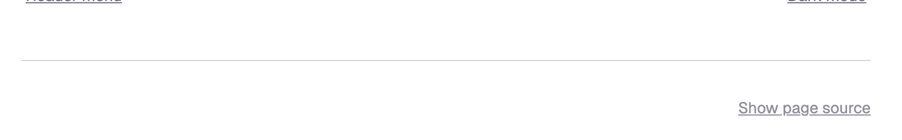
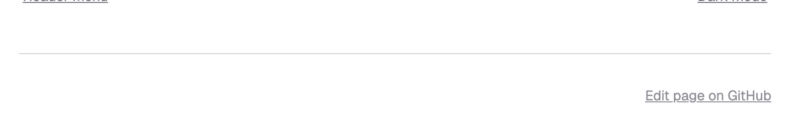
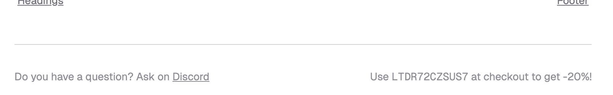

Article footer#
The article footer appears at the bottom of every page, below the main content and article navigation. It shows a page source link by default, but you can enable an edit page link and inject arbitrary HTML by overriding the respective Jinja blocks.
View page source#
By default, the theme adds a link to view the source of a page (i.e., the underlying reStructuredText or MyST Markdown for the page).
(This is controlled by the Sphinx options html_show_sourcelink and html_copy_source, which are both true by default.)
{kind=link}

Disable view page link
To disable it, use the following configuration:
html_show_sourcelink = False
Edit page source#
You can add a link to edit the page source on every page, enabling users to directly modify the documentation and submit a pull request with their changes.
Two theme options control the “edit page” link:
edit_page_label: the link textedit_page_url: a template to build the edit URL, where$FILENAME$will be replaced by the page source filenameboth
edit_page_labelandedit_page_urlmust be set
The URL template edit_page_url is, e.g., for GitHub in format https://github.com/<org>/<repo>/edit/<branch>/<filename>.
Choose between “view source” (read-only reference) and “edit page” (invites contributions) based on your documentation goals. Typically, you’ll enable one or the other, not both.
# Disable "Show page source"
html_show_sourcelink = False
html_theme_options = {
# Set both to enable "Edit page source"
"edit_page_label": "Edit on GitHub",
# {filename} will be replaced by actual source filename
"edit_page_url": "https://github.com/syncthing/docs/edit/main/$FILENAME$"
}
{kind=link}

Customize article footer#
The article footer consists of two Jinja blocks: article_footer_left and article_footer_right, which allow you to fully customize it.
See also
Learn more about Jinja blocks, or list of all Jinja templates and blocks you can override.
For example, to show a forum link on the left and a discount code on the right:
In
conf.py, settemplates_path = ["_templates"].Create
_templates/partials/article_footer.html.Extend the original template and override the desired blocks:
{% extends "!partials/article_footer.html" %} {% block article_footer_left %} <p>Do you have a question? Ask on <a href="https://discord.gg/uaEa43HB">Discord</a></p> {% endblock %} {% block article_footer_right %} <p>Use <code>LTDR72CZSUS7</code> at checkout to get -20%!</p> {% endblock %}
The result:
{kind=link}
